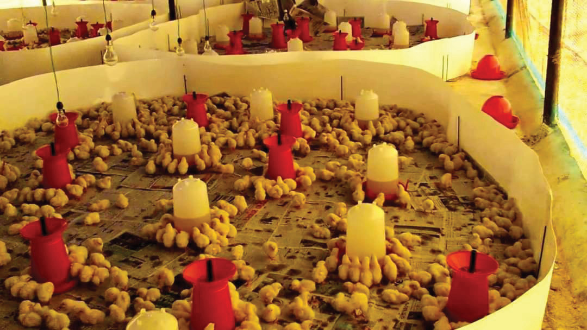
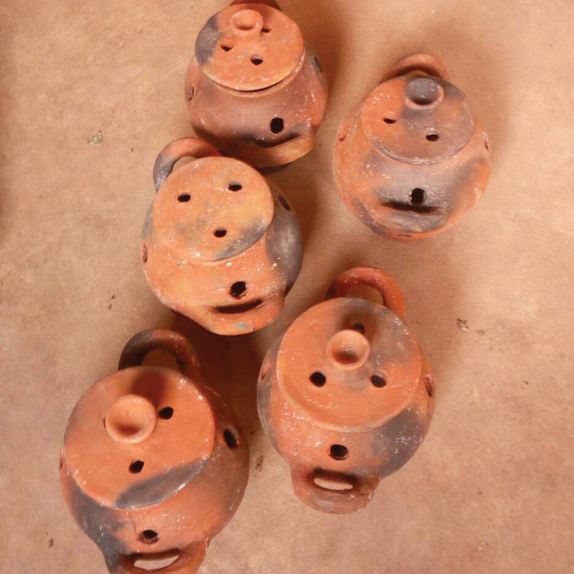
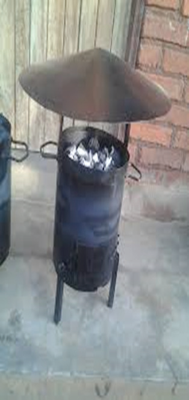

day old and last at 4 to 6 weeks of age, depending on weather conditions. However, chicks can be reared in the brooder for 6 - 9 days in hotter areas and 12 - 21 days in colder areas. Most brooders should be round because corners encourage overcrowding. A square brooder can also be used provided that the corners are made round by using plywood or boxes. In large commercial poultry farming, the brooding house is expected to be at least 100 metres from other buildings on the farm. Figure 9.9 shows chicks in brooder rings.

The following brooder temperatures have to be maintained: Day 1-2 (34 - 35°C); Day 3 - 4 (32 - 33°C); Day 5 - 6 (30 - 31°C); Day 7 (29 - 30°C); and Day 8 onwards 28 - 30°C. The brooder temperature requirement is similar for all types of chicks. There are various sources of heat for a brooder. These include gas brooder lamps, electric bulbs with 100 Watts, infrared bulbs, charcoal burners, clay-pot burners and lanterns. Figures 9.10 (a) to (d) show some examples of heat sources for brooders.

